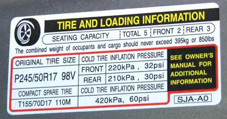

Tires
Have you heard about WINTER TIRES?
Just like we don't go outside without our shoes on, tires are very important to vehicles (like Air Jordran important). Depends on where, when, and what we do, we wear different types of shoes like boots, running shoes, sandals, and there are many different types of shoes available on the market. Same with the tires, depends on where, when, and what we drive, each vehicle requires a specific type of tires.
When you buy a shoe, you always pick the shoe size that fits on your foot. This applies to vehicles as well. Either in your vehicle's owner's manual or on the driver side door, there's a section that displays the vehicle's tire and loading information. You may find something that is as similar as to this:
Those numbers are very important when you are whether buying a set of tires. If you ignore the manufacture's recommendation and pick randomly, as a consequence, it may cause your life.
Reading and understanding tire spec is very simple. The first three numbers are the most important when it comes to searching for the correct tire size. From the left, each numbers describes the tire's width, profile, and the required rim size. Bigger the number it will be bigger and require bigger rim size. The letter 'R' is to represent Rim.
Once the tire size is known, now it's time to look at its maximum load capacity and speed limit. The number with the letter at the right represents the tire's maximum load capacity and it's maximum speed limit. As long as these numbers and letters are equivalent or higher than the recommendation, then you don't need to worry about. Higher number means that each tire can hold more weight before blowing it up.
Because winter tires performs much better than all-season tires in Winter, doesn't mean it will have better performance in warm weather. It is recommended in Canada to have both all-season tires and winter tires and swap the tires depends on the temperature.
Winter tires are made of much more soft rubber material for better traction in cold weather. However, when the temperature goes above 7 degree celsius, the road is too hot for the tires to cool down, which it decrease the tire tread's depth significantly faster than expected.